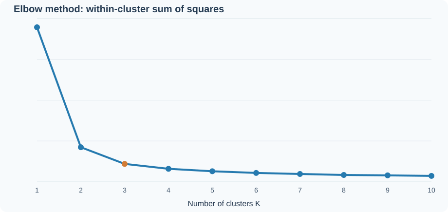

Explore the same Iris dataset with different cluster counts. K-Means changes the grouping, not the flowers. The three assigned experiments are K = 4, 5 and 9.
Explore K-Means clustering
The model uses four measurements. This graph projects the fitted groups onto petal length and petal width. Crosses indicate centroids.
Why try different K values?
Four boxes organize 150 flowers into four groups. Nine boxes can divide them more finely, but they cannot create six extra species. Smaller inertia alone does not establish a scientifically better result.
Elbow method

K = 3 is the classroom reference. The experiments assigned by Professor Muturi are K = 4, 5 and 9.